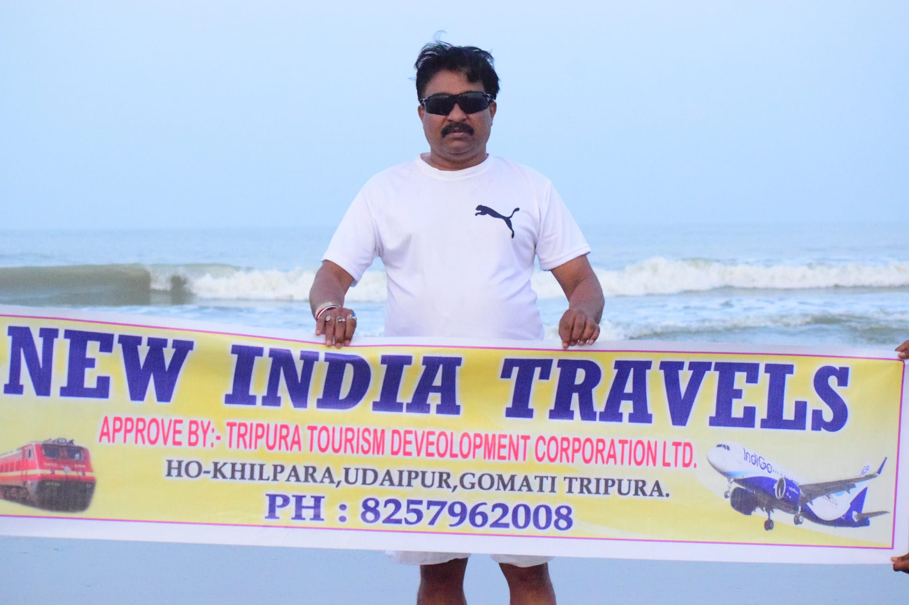

Home
Certificates
Services
Contact Us
About

Your browser does not support the video tag.
Bibhas Chandra basu : khilpara Udaipur Gomati Tripura : Email Address bibhas.basumandir@gmail.com : Mobil No 8257962008 , 9862455719


.jpg?w=753&h=450&dpr=1.5)